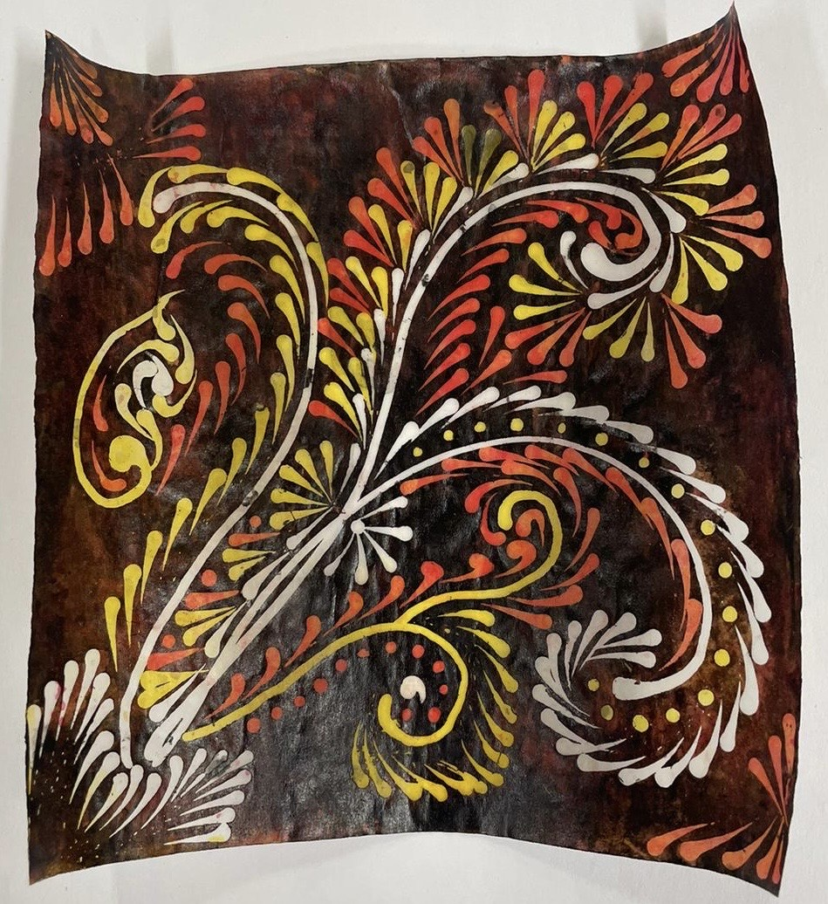

Voskovou batikou se rozumí technika dekorování vajec, tkanin i papíru, za pomocí včelího vosku. Tato technika spočívá v nanesení roztaveného vosku na vybraný předmět, jeho obarvení a znovunanesení vosku. Tento postup se opakuje, dokud nejsme spokojeni s výsledkem. Následně sundáme vosk a získáme vícebarevný efekt.

Nástroje využívané pro voskovou batiku
Již mnoho let se této technice věnuje Hana Doskočilová. Je certifikovanou lidovou umělkyní a své výtvory vystavuje i v jihočeském muzeu. Její práci můžete vidět na jejích facebookových stránkách.